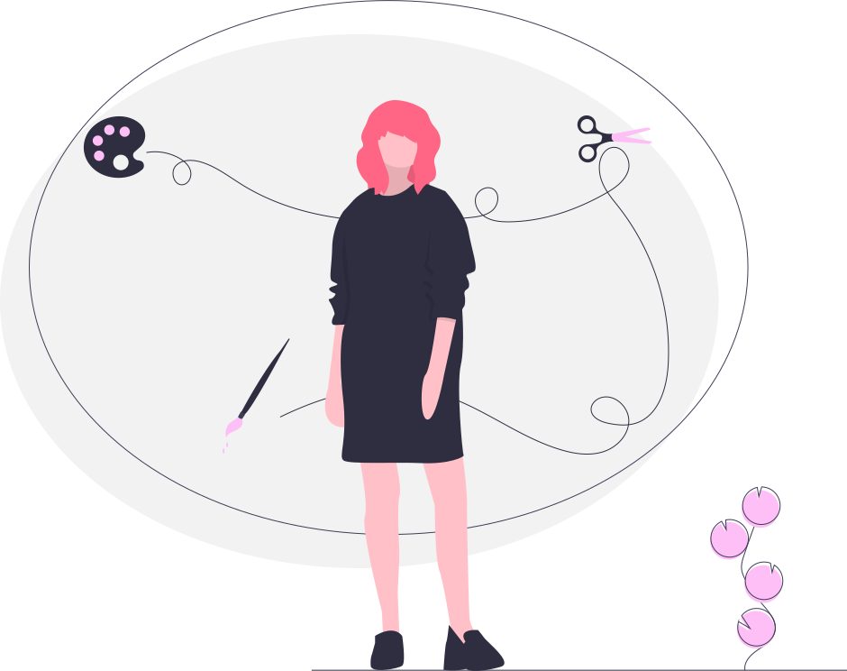

Assalamualaikum warahmatullahi wabarakatu,terima kasih atas kunjungan dari web ini.Dimana kami membuat web ini untuk menyelesaikan tugas dari mata kuliah pengantar teknologi informasi.Pada laman ini kami akan menjelaskan riwayat pelatihan dimana Nur Afiah ini orang yang sangat suka bergelut dengan estrakurikuler sejak dia SMP.Selanjutnya pada jengjang SMA juga suka dengan estrakurikuler.Bahkan pernah mengikuti pelatihan kepemimpinan atau lebih di singkat dengan LATPINWA.Bahkan pada masa perguruan tinggi dia ikut pelatihan SAINS.
Sejak masuk jenjang SMP Nur Afiah memilih estrakulikuler pramuka pada tahun 2013,semasa SMP dia mengikuti pelatihan pramuka dimana tujuan bagaimana cara kita lebih mandiri serta mampu beradaptasi dilingkungan manapun.
Sejak masuk jenjang SMA Nur Afiah masuk dalam pelatihan kepemimpinan.Sejak tahun 2016 dia tidak mengikuti pelatihan tersebut tetapi dia meliat teman temannya yang sudah ikut bahwa pada pelatihan ini sangat seru dan bermanfaat sehingga dia masuk pada tahun 2017 .Dimana pelatihan tersebut disingkat dengan LATPINWA dan dia angkatan 33 dari pelatihan ini dimana tujuan dari pelatihan ini yaitu bagaimana cara kita untuk menyelesaikan suatu masalah,melatih publik speaking dan lebih mandiri.
Semasa SMA Nur Afiah juga mengikuti estrakulikuler PMR dan sekarang sudah menjadi PMI.Pada pelatihan ini dia ikut pelatihan tim medis pada tahun 2018 dimana tujuan nya untuk menjadi penolong pertama dan bukan saja menjadi penolong orang lain tetapi penolong diri sendiri..
Pada pelatihan ini Nur Afiah melaksanakan pelatihan pada tahun 2019.Pada pelatihan ini berlangsung 1 semester di jenjang pergruan tinggi dengan mata kuliah Pendidikan Agama Islam.Dimana pelatihan ini bertujuan bagaimana cara mengetahui tajwid tajwid pada setiap lafal al quran atau bacaan dalam al quran sehingga mampu membaca al quran dengan benar.